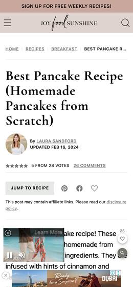
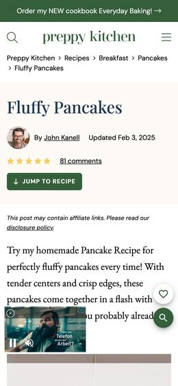
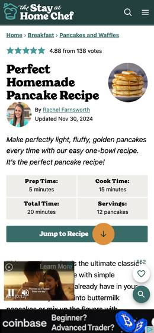
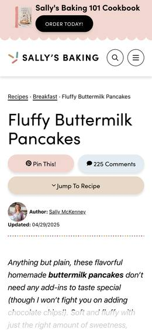
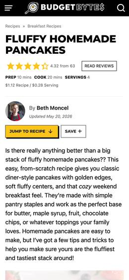
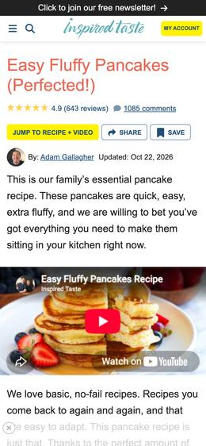
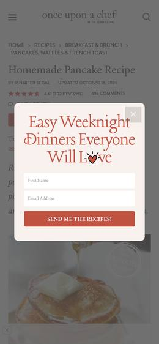
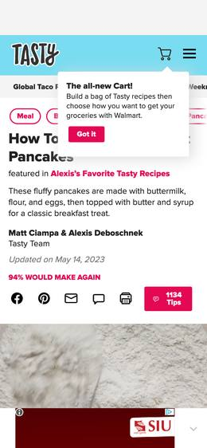
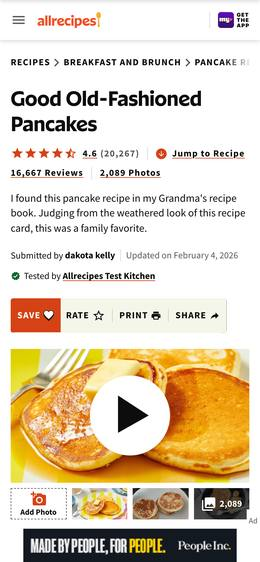
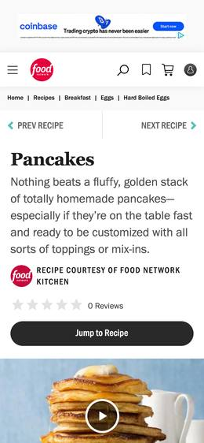

Pancakes
Ingredients
- 1½ cups (190 g) all-purpose flour
- 2 tbsp sugar
- 2 tsp baking powder
- ½ tsp salt
- 1¼ cups (300 ml) milk
- 1 large egg
- 3 tbsp butter, melted, plus more for the pan
Method
- Whisk the flour, sugar, baking powder and salt in a bowl.
- In a jug, whisk the milk, egg and melted butter.
- Pour the wet into the dry. Stir until just combined; lumps are fine. Rest 5 min.
- Heat a pan over medium and add a little butter. Pour in ¼ cup batter per pancake.
- Flip when bubbles pop on top and the edges look dry, about 2 min. Cook 1 min more.
Serve hot with butter and maple syrup. Keep a batch warm in a 200°F / 95°C oven.
How much do recipe sites make you scroll before the recipe?
The recipe above fits on one phone screen. Then 14 popular pancake pages were loaded in headless Chromium at iPhone size (390×844) and scrolled like a person would. On average you scroll 10.2 phone screens and read past 837 words before the ingredient list starts. The worst offender is JoyFoodSunshine. Its ingredient list starts 19.1 screens down, after 1,083 words. The page shows 3 overlays, contacts 141 outside domains and downloads 13.0 MB.
Ranking, worst to best
Score = the average of the five measures, each scaled to the worst site (100 = worst on everything). Every number is the median of 3 separate visits. Hover a bar to see the range across visits. The screenshot shows the first screen on arrival.
| Site (first screen) | Screens before ingredients | Words before ingredients | Popups & overlays | Third-party domains | Megabytes | |
|---|---|---|---|---|---|---|
| 1 |  JoyFoodSunshine score 82 |
19.1 | 1,083 | 3 | 141 | 13.0 |
|
Overlays seen: 3× ad · Ingredient list starts with: “1 ¼ cups all-purpose flour”
· Biggest downloads (MB): 2mdn.net 2.8, jwpsrv.com 2.6, joyfoodsunshine.com 2.4 Some outside domains: googlesyndication.com, doubleclick.net, smartadserver.com, adthrive.com, openx.net, adtrafficquality.google, casalemedia.com, kargo.com … | ||||||
| 2 |  Preppy Kitchen score 80 |
17.9 | 1,243 | 3 | 110 | 13.5 |
|
Overlays seen: 3× ad · Ingredient list starts with: “1⅓ cups all-purpose flour (160g)”
· Biggest downloads (MB): smadex.com 4.0, preppykitchen.com 1.9, 2mdn.net 1.4 Some outside domains: googlesyndication.com, doubleclick.net, rubiconproject.com, adthrive.com, amazon-adsystem.com, openx.net, adnxs.com, casalemedia.com … | ||||||
| 3 |
Handle the Heat score 79 |
11.4 | 938 | 3 | 148 | 19.3 |
|
Overlays seen: 3× ad · Ingredient list starts with: “2 cups (254 grams) all-purpose flour”
· Biggest downloads (MB): handletheheat.com 4.5, 2mdn.net 3.8, smadex.com 2.4 Some outside domains: googlesyndication.com, doubleclick.net, smartadserver.com, rubiconproject.com, adthrive.com, amazon-adsystem.com, adsrvr.org, casalemedia.com … | ||||||
| 4 |  The Stay at Home Chef score 72 |
14.0 | 905 | 3 | 136 | 11.8 |
|
Overlays seen: 3× ad · Ingredient list starts with: “1 1/2 cups all-purpose flour”
· Biggest downloads (MB): 2mdn.net 5.0, doubleclick.net 1.0, thestayathomechef.com 0.9 Some outside domains: googlesyndication.com, doubleclick.net, adthrive.com, rubiconproject.com, kargo.com, openx.net, amazon-adsystem.com, casalemedia.com … | ||||||
| 5 |  Sally's Baking score 60 |
17.3 | 1,246 | 1 | 104 | 8.2 |
|
Overlays seen: 1× ad · Ingredient list starts with: “6 Tablespoons (85g) unsalted butter, melted and slightly cooled (plus more butter for greasing)”
· Biggest downloads (MB): sallysbakingaddiction.com 3.6, youtube.com 1.0, adthrive.com 0.8 Some outside domains: googlesyndication.com, doubleclick.net, adthrive.com, rubiconproject.com, amazon-adsystem.com, criteo.com, pubmatic.com, adsrvr.org … | ||||||
| 6 |  Budget Bytes score 59 |
7.9 | 674 | 2 | 151 | 12.8 |
|
Overlays seen: 2× ad · Ingredient list starts with: “1 cup all-purpose flour (150g, $0.17*)”
· Biggest downloads (MB): budgetbytes.com 2.8, smadex.com 2.0, doubleclick.net 1.0 Some outside domains: googlesyndication.com, doubleclick.net, smartadserver.com, rubiconproject.com, openx.net, adthrive.com, casalemedia.com, amazon-adsystem.com … | ||||||
| 7 |  Inspired Taste score 58 |
15.9 | 1,569 | 1 | 82 | 5.8 |
|
Overlays seen: 1× ad · Ingredient list starts with: “5 tablespoons (70 g) butter, plus more for serving (European-style, like Kerrygold, is best)”
· Biggest downloads (MB): inspiredtaste.net 1.3, youtube.com 1.1, adthrive.com 0.8 Some outside domains: googlesyndication.com, doubleclick.net, adthrive.com, kargo.com, adsrvr.org, pubmatic.com, rubiconproject.com, openx.net … | ||||||
| 8 |  Once Upon a Chef score 53 |
10.8 | 673 | 1 | 97 | 16.4 |
|
Overlays seen: 1× ad · Ingredient list starts with: “2 cups all-purpose flour, spooned into measuring cup and leveled off”
· Biggest downloads (MB): onceuponachef.com 5.2, jwpsrv.com 2.5, 2mdn.net 1.4 Some outside domains: googlesyndication.com, doubleclick.net, adthrive.com, rubiconproject.com, openx.net, amazon-adsystem.com, kargo.com, adsrvr.org … | ||||||
| 9 |  Tasty score 46 |
1.6 | 119 | 2 | 197 | 9.5 |
|
Overlays seen: 1× video, 1× ad · Ingredient list starts with: “2 ½ cups all-purpose flour(310 g)”
· Biggest downloads (MB): buzzfeed.com 1.6, gstatic.com 0.8, doubleclick.net 0.8 Some outside domains: googlesyndication.com, doubleclick.net, rubiconproject.com, smartadserver.com, pubmatic.com, connatix.com, amazon-adsystem.com, inmobi.com … | ||||||
| 10 |
BBC Good Food score 45 |
3.5 | 491 | 1 | 179 | 9.6 |
|
Overlays seen: 1× consent · Ingredient list starts with: “200g self-raising flour”
· Biggest downloads (MB): bbcgoodfood.com 1.5, immediate.co.uk 1.4, gstatic.com 0.8 Some outside domains: rubiconproject.com, outbrain.com, pubmatic.com, doubleclick.net, onetag-sys.com, inmobi.com, gumgum.com, bidswitch.net … | ||||||
| 11 |  Allrecipes score 42 |
6.5 | 647 | 1 | 119 | 8.0 |
|
Overlays seen: 1× ad · Ingredient list starts with: “1 ½ cups all-purpose flour”
· Biggest downloads (MB): allrecipes.com 2.1, amazon-adsystem.com 1.1, googletagmanager.com 0.8 Some outside domains: amazon-adsystem.com, googlesyndication.com, doubleclick.net, google.com, ay.delivery, adsrvr.org, rubiconproject.com, casalemedia.com … | ||||||
| 12 |
Betty Crocker score 35 |
8.5 | 1,027 | 1 | 7 | 4.9 |
|
Overlays seen: 1× consent · Ingredient list starts with: “1 egg”
· Biggest downloads (MB): bettycrocker.com 3.8, bazaarvoice.com 0.7, cookielaw.org 0.2 Some outside domains: bazaarvoice.com, cookielaw.org, sitecorecloud.io, googletagmanager.com, onetrust.com, ytimg.com, trustarc.com | ||||||
| 13 |  Food Network score 28 |
6.2 | 873 | 0 | 68 | 3.4 |
|
Overlays seen: none · Ingredient list starts with: “1 1/2 cups all-purpose flour”
· Biggest downloads (MB): sndimg.com 0.5, doubleclick.net 0.4, cookielaw.org 0.3 Some outside domains: doubleclick.net, googlesyndication.com, adsafeprotected.com, newrelic.com, adtrafficquality.google, nr-data.net, exelator.com, ad-delivery.net … | ||||||
| 14 |
King Arthur Baking score 22 |
2.4 | 236 | 1 | 37 | 5.4 |
|
Overlays seen: 1× site bar · Ingredient list starts with: “2 large eggs”
· Biggest downloads (MB): kingarthurbaking.com 1.4, googletagmanager.com 1.2, brxcdn.com 1.1 Some outside domains: yotpo.com, google.com, tiktok.com, bloomreach.com, clarity.ms, typekit.net, nr-data.net, pinterest.com … | ||||||
Sites that blocked the test browser
- The Kitchn — blocked us: HTTP 403 - Access to this page has been denied.. No numbers reported.
How this was measured
- Pages. Web searches for “best pancake recipe”, “fluffy pancakes recipe from scratch” and “easy homemade pancake recipe”, plus searches for the biggest recipe publishers. The test kept each site's top pancake page, one page per site. Search engines don't publish traffic figures, so “most popular” means prominent in search results plus large well-known publishers.
- Browser. Real Chromium (Playwright, new headless mode) with a 390×844 viewport, 3× pixel density, touch enabled and an iPhone Chrome user agent. Fresh profile every visit (no cache, no cookies). Tests ran on 2026-11-03 from a connection in India. Ads, consent banners and geo-targeted content can differ in other countries.
- Behaviour. Wait for the page to load and the network to go quiet (capped), plus 3 s. Take the screenshot. Tap “Agree/Accept” on a consent wall if there is one, as most people do. Then scroll in thumb-flicks of 560 px with 350 ms pauses to the bottom of the page (capped at 150 s). If a modal blocks scrolling, close it the way a person would.
- Screens before ingredients. Distance from the top of the page to the first line of the real ingredient list, divided by 844 px. Measured after scrolling, so ads that expand while you scroll are included. The real list is the first group of at least 3 visible lines that each have a quantity and an ingredient (“1½ cups flour”). Prose like “Flour: any all-purpose works” doesn't count. Each detected first line was checked against the recipe's own structured data and the screenshots.
- Words before ingredients. Visible words that come before that first ingredient line in the page: nav, story, tips, FAQ, ad labels. Text inside ad iframes isn't counted, so this number is on the low side.
- Popups & overlays. Distinct elements that float over the content: fixed-position elements, or sticky bars that follow you down the whole page. Each covers at least 4% of the screen at some point during the visit. Sticky site headers don't count. Pieces of one widget count once. Inline ads that stay in their own slot don't count.
- Third-party domains. Distinct registrable domains (e.g.
doubleclick.net) the page or its frames requested, other than the site's own. Obvious domains owned by the same publisher (their CDN, parent company) don't count. Domains are a proxy for outside companies: one company can own several (e.g. Google: doubleclick.net, googlesyndication.com). - Megabytes. Bytes transferred over the network (compressed body + headers) for every request during the visit, including ads loaded while scrolling. Ad-heavy pages keep loading new ads as long as they're open, so this counts one read-through (about 1–3 min), not a ceiling. One exclusion: Handle the Heat also downloaded 7–9 MB from Cloudflare's bot-check service (
challenges.cloudflare.com). That traffic is likely inflated by the test browser itself, so it isn't counted (raw totals were 26–34 MB). Without it, Handle the Heat is still the heaviest page.